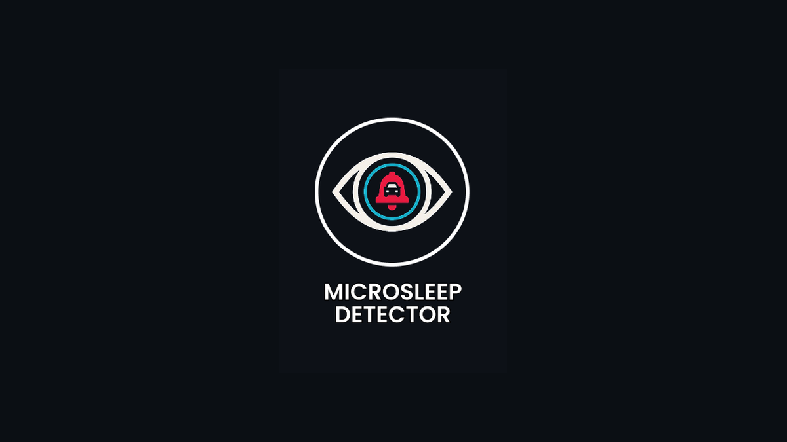

Tugas akhir · IndividualComputer Vision · Deep Learning
Microsleep Detector
Aplikasi Android on-device yang mengintegrasikan deteksi area mata, model deep learning, dan peringatan real-time.
17,7 FPS · diuji pada 6 perangkatLihat studi kasus →